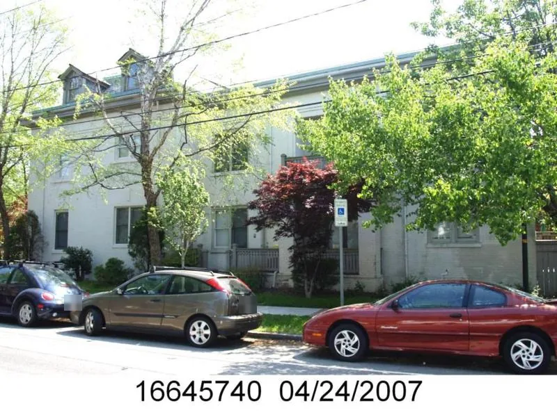
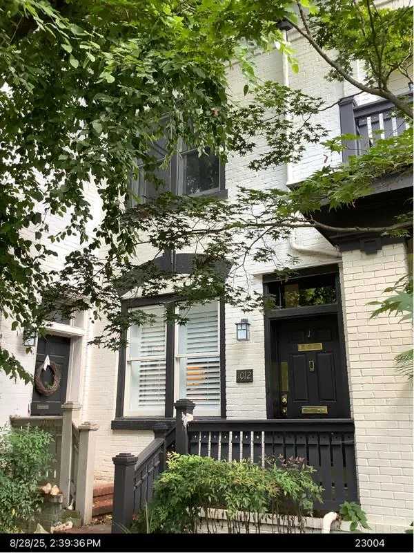
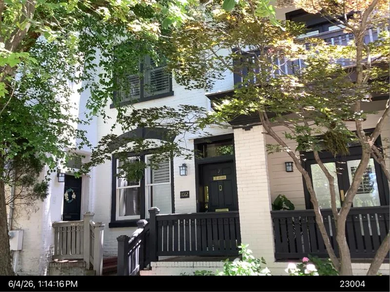
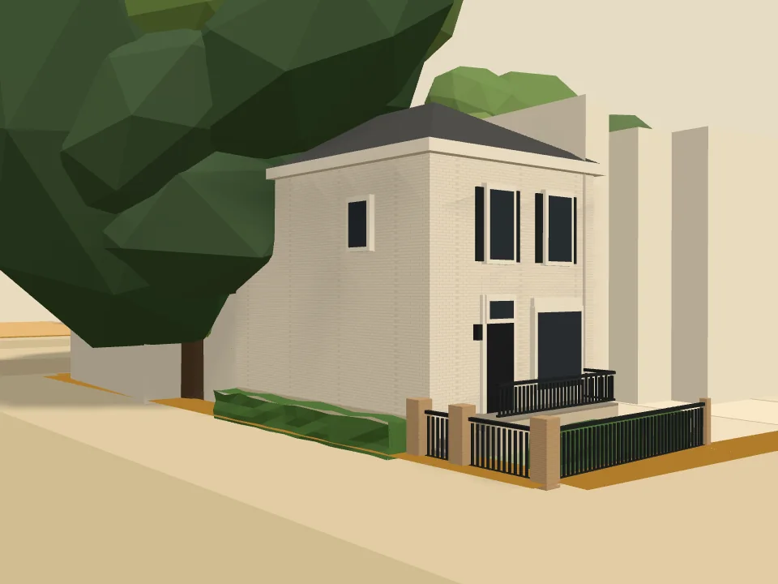
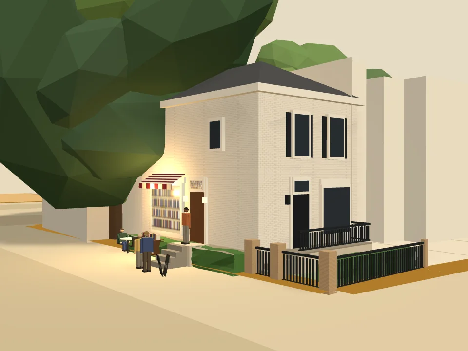
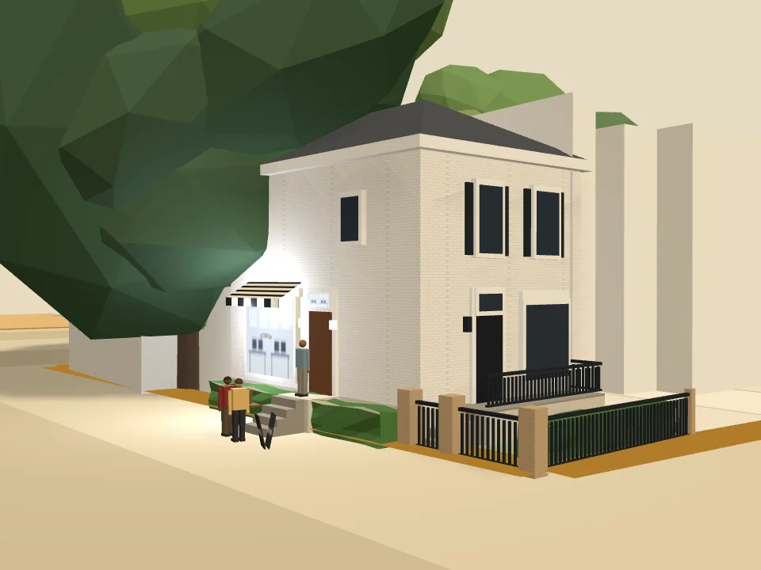

The house
- Built
- 1908
- Use today
- Single-family house, attached (a townhome)
- Living space
- 2,028 sq ft
- Lot
- 1,149 sq ft
- Zoning
- HC-G2
- Street
- Colley Avenue, classed arterial/collector
The City's building footprint draws 1012 as one building with its row: 1014 Colley on the corner, and four houses on Graydon Avenue. The row doesn't face Colley. 1014 is entered from Graydon, and 1012's door faces south, along Colley, off a side yard behind a fence. So the row's whole side on Colley, the frontage the plan points shops toward, is a nearly blank wall, with only a few windows.
The City's assessor has photographed 1012 three times, in 2007, August 2025 and June 2026. The house is painted white brick, two floors over a raised base. At its door there's a stoop with dark railings, a black door with a transom beside a wide window, and dark shutters on the windows upstairs.



Photos: City of Norfolk Real Estate Assessor, from the property card for this parcel. We host copies with license plates blurred, as our open letter describes. Facts from the City's FY2026 assessment on Norfolk Open Data.
What it would take to face the street
We built the house by hand for the parcel explorer, from the City's building footprint and these photos. The City draws the whole row as one footprint, so the explorer cuts out this house's share and leaves the rest of the row standing.
A shop here would need what 715 Colonial and 740 W Princess Anne already have: a way in from the street. So when you pick a use, the explorer cuts a shop window and a door into the blank wall on Colley, with steps up to the door, then adds lettering, an awning, lanterns and a book cart or a bench. That is a change to the outside of the house, and it's drawn here to show what the rule leaves out of reach, not as a design.



Open 1012 Colley in the explorer →
The rule
1012 Colley is in HC-G2. Table 3.6.11 of the zoning ordinance leaves restaurants, retail goods establishments and offices blank in HC-G2, and a blank means prohibited. No permit can authorize them, at any price. Across the district line in HC-G3, the same table allows all three: offices by right, and restaurants and retail by right or with a conditional use permit.
The plan
NFK2050, the comprehensive plan City Council adopted on December 9, 2025, puts HC-G2 in its Sustain – Traditional place type. For that place type it lists "Commercial/retail, small-scale office" as a secondary land use (p. 92), and it says where secondary uses belong: "The Secondary, non-residential uses envisioned for the Sustain areas are appropriate primarily along arterials and collector streets, preserving the residential character of the neighborhood interiors" (p. 69).
The City's own street layer classes Colley Avenue in front of 1012 as an arterial or collector street. This is the frontage that passage describes. The plan also encourages small-scale retail "at key nodes or intersections, with consistent street frontage" (p. 93). 1012 isn't the corner house, but it's the next one: its neighbor in the row, 1014 Colley, stands at the corner of Colley and Graydon. Neither house opens onto Colley.
What it would take
Policy Brief No. 1 proposes amending Table 3.6.11 to permit six small uses by right in HC-G2, under performance standards. As drafted, the amendment reaches the interior blocks too, which the plan says to keep residential. On a block like this one, the plan and the amendment agree.
Here the amendment alone wouldn't be enough. It would make the use legal, but a shop that faces Colley would also need new openings in the wall, and the brief keeps the Architectural Review Board's say over that: "Any exterior modification associated with a new commercial use, such as signage, facade changes, or new windows, still requires a Certificate of Appropriateness from the ARB" (Section IV). On this house, both doors would have to open: the use table, and the ARB.
This is an illustration, not a proposal for this property. We haven't spoken with the people who live here, and nothing on this page says they want a shop in their house. It shows what the rule rules out, on a house the City has photographed for nineteen years.
SOURCES: City of Norfolk Real Estate Assessor, FY2026 assessment for parcel 16645740 (effective July 1, 2025), via Norfolk Open Data, and street photos dated April 24, 2007, August 28, 2025 and June 4, 2026 (gisshare.norfolk.gov); City of Norfolk building footprints, parcels, zoning and street centerlines, OpenData GIS services (the street layer's right-of-way class); Norfolk Zoning Ordinance, Table 3.6.11 and § 4.2; NFK2050 Comprehensive Plan, adopted December 9, 2025 (Ordinance No. 50201), pp. 69, 92, 93; Norfolk Historic District Design Guidelines, adopted by the Architectural Review Board May 26, 2026. All checked November 2026.